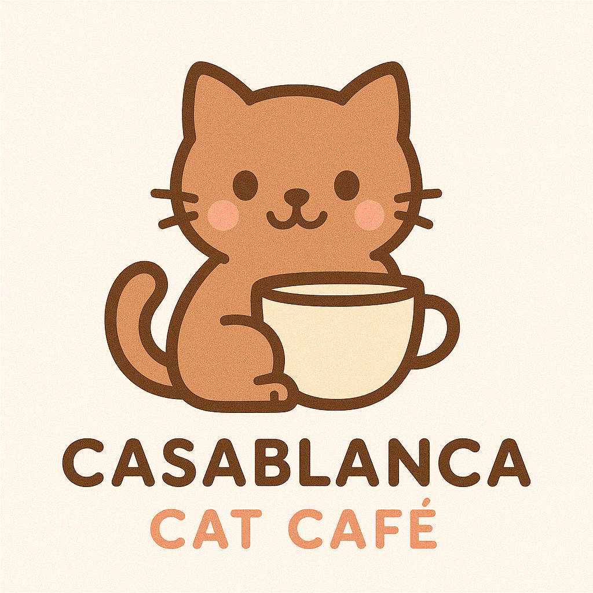

Le concept
Un café chaleureux où l’on partage un moment avec des chats adoptables, soutenu par des associations locales.

Un endroit cosy pour savourer un cappuccino, rencontrer nos pensionnaires et soutenir l’adoption responsable.
Découvrir les cartesOuvert tous les jours de 10h à 20h. Espace calme, livres, plaid, wifi — et des chats heureux 🐾
Avec nos associations partenaires, nous facilitons l’adoption responsable.
Bien-être félin : repos, soins, zones calmes et règles claires.
Ateliers, lectures, rencontres — suivez nos réseaux pour les dates.